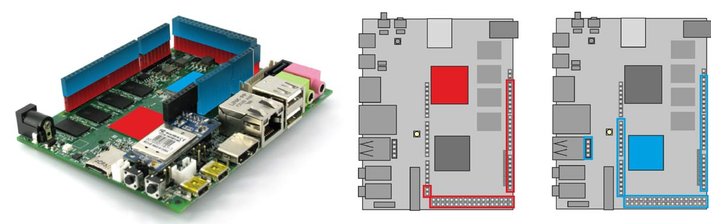

UDOO Quad/Dual Documentation
UDOO Quad/Dual Documentation
GPIO Pinout
Introduction
In this chapter it will be described how UDOO DUAL/QUAD manages the signals available on external pin header, and the way to control all the GPIOs. On UDOO DUAL/QUAD, Freescale i.MX and Atmel SAM3X8E share most of the GPIOs available on external pin headers. Each pin of both processors can be set in INPUT or OUTPUT mode. In INPUT mode, each processor read the electrical level of the signal. In OUTPUT mode they can drive low or high the voltage level on each pin. So both processors can control all digital external pins. Usually, with Arduino Due, applications that manage external pins are developed to run on the SAM3x8E microcontroller. On UDOO DUAL/QUAD it is possible to control external pins also using i.MX6 processor.

UDOO DUAL/QUAD GPIO Pinout Diagram
Arduino DUE (SAM3x8E) GPI/Os Management
SAM3x8E microcontroller can manage GPIOs using classic Arduino programming language. To manage a GPIO in Arduino Environment it is necessary to set its direction (input or output) by calling the pinMode(pin, mode) function.
pinMode(2, INPUT );
pinMode(2, OUTPUT );
If pin is set in input mode, its value can be read by using the function digitalRead(pin) providing pin number as parameter: e.g. int val = digitalRead(2); If pin is set in output mode, its value can be written by using the function digitalWrite(pin, value)providing the pin number and the value that must be written as parameters:
digitalWrite(2, HIGH);
digitalWrite(2, LOW);
More information about Arduino programming Language can be found at Arduino Language Reference Page
Go to the Arduino section to learn how to program the Arduino DUE embedded
Linux (i.MX6) GPI/Os Management
i.MX6 can handle external pins in many different ways. In default configuration, they can be accessed from user level through the standard Kernel Linux interface. Some of them can be configured for specific functionalities provided by i.MX6 architecture, like SPI, I2C, I2S, audiomux, PWMs output, UARTs and so on. Go to the Device Tree Editor section to know how export these functionalities.
By default (for safety reasons), all GPIOs are exported in input configuration from the Linux side, to let you use they from the Arduino DUE side. This means the board CPU can read the value of the voltage connected to the pins. The other possible configuration is output, which forces a pin to take a specific voltage.
Heads up! When using the output configuration, be sure to avoid short-circuits!
It is possible to switch a pin in input or output mode with the following commands:
# set pin 25 to input
echo in > /gpio/pin25/direction
# set pin 25 to output
echo out > /gpio/pin25/direction
To verify the voltage direction, just read the same file:
cat /gpio/pin25/direction
Write values
To write a low or high value on a GPIO, you need to write 0 or 1 in the value file:
# set GPIO 25 to low value - 0 volts
echo 0 > /gpio/pin25/value
# set GPIO 25 to high value - 3.3 volts
echo 1 > /gpio/pin25/value
In order to set the value, the GPIO must be in the out direction.
Read values
If the direction is set to in, it is possible to read the GPIO value reading the same file:
cat /gpio/pin25/value
If the direction is set to out and you try to read the value, is not guaranteed that the value is coherent with the voltage found on the external pinout.
To make your life even simplier, you can find a super handy printable label for your GPIOs (thanks ralphie79!).
Advanced usage
GPIO management is made simple by the udoo-gpio-export package, which comes pre-installed in UDOObuntu 2 Linux. This package takes care of exporting all GPIOs in input mode, and creates the symlinks from the /sys/class/gpio entries to the /gpio directory.
If you want, you can directly use the /sys/class/gpio entries. For example, to export a GPIO use:
echo GPIO_NUMBER > /sys/class/gpio/export
Please note that GPIO_NUMBER is not the number written on the PCB. Instead, it is the number written in the round label close to the PCB number in the previous two images. For example, if you want to control the pin 24 (PCB name) you should read GPIO_25.
GPIO_NUMBER can be calculated with the following relation:
GPIO_NUMBER = ((BANK - 1) * 32 ) + ID
For example, if you want to export the GPIO1_IO_25;
# GPIO1_IO_25 means BANK=1 and ID=25
# GPIO_NUMBER = ((1 - 1) * 32 ) + 25 = 25
echo 25 > /sys/class/gpio/export
There’s an handy table to help you sort out the correct GPIO numbers:
| PIN NUMBER | GPIO NUMBER | PATH |
|---|---|---|
| 0 | 116 | /sys/class/gpio/gpio116/ |
| 1 | 112 | /sys/class/gpio/gpio112/ |
| 2 | 20 | /sys/class/gpio/gpio20/ |
| 3 | 16 | /sys/class/gpio/gpio16/ |
| 4 | 17 | /sys/class/gpio/gpio17/ |
| 5 | 18 | /sys/class/gpio/gpio18/ |
| 6 | 41 | /sys/class/gpio/gpio41/ |
| 7 | 42 | /sys/class/gpio/gpio42/ |
| 8 | 21 | /sys/class/gpio/gpio21/ |
| 9 | 19 | /sys/class/gpio/gpio19/ |
| 10 | 1 | /sys/class/gpio/gpio1/ |
| 11 | 9 | /sys/class/gpio/gpio9/ |
| 12 | 3 | /sys/class/gpio/gpio3/ |
| 13 | 40 | /sys/class/gpio/gpio40/ |
| 14 | 150 | /sys/class/gpio/gpio150/ |
| 15 | 162 | /sys/class/gpio/gpio162/ |
| 16 | 160 | /sys/class/gpio/gpio160/ |
| 17 | 161 | /sys/class/gpio/gpio161/ |
| 18 | 158 | /sys/class/gpio/gpio158/ |
| 19 | 159 | /sys/class/gpio/gpio159/ |
| 20 | 92 | /sys/class/gpio/gpio92/ |
| 21 | 85 | /sys/class/gpio/gpio85/ |
| 22 | 123 | /sys/class/gpio/gpio123/ |
| 23 | 124 | /sys/class/gpio/gpio124/ |
| 24 | 125 | /sys/class/gpio/gpio125/ |
| 25 | 126 | /sys/class/gpio/gpio126/ |
| 26 | 127 | /sys/class/gpio/gpio127/ |
| 27 | 133 | /sys/class/gpio/gpio133/ |
| 28 | 134 | /sys/class/gpio/gpio134/ |
| 29 | 135 | /sys/class/gpio/gpio135/ |
| 30 | 136 | /sys/class/gpio/gpio136/ |
| 31 | 137 | /sys/class/gpio/gpio137/ |
| 32 | 138 | /sys/class/gpio/gpio138/ |
| 33 | 139 | /sys/class/gpio/gpio139/ |
| 34 | 140 | /sys/class/gpio/gpio140/ |
| 35 | 141 | /sys/class/gpio/gpio141/ |
| 36 | 142 | /sys/class/gpio/gpio142/ |
| 37 | 143 | /sys/class/gpio/gpio143/ |
| 38 | 54 | /sys/class/gpio/gpio54/ |
| 39 | 205 | /sys/class/gpio/gpio205/ |
| 40 | 32 | /sys/class/gpio/gpio32/ |
| 41 | 35 | /sys/class/gpio/gpio35/ |
| 42 | 34 | /sys/class/gpio/gpio34/ |
| 43 | 33 | /sys/class/gpio/gpio33/ |
| 44 | 101 | /sys/class/gpio/gpio101/ |
| 45 | 144 | /sys/class/gpio/gpio144/ |
| 46 | 145 | /sys/class/gpio/gpio145/ |
| 47 | 89 | /sys/class/gpio/gpio89/ |
| 48 | 105 | /sys/class/gpio/gpio105/ |
| 49 | 104 | /sys/class/gpio/gpio104/ |
| 50 | 57 | /sys/class/gpio/gpio57/ |
| 51 | 56 | /sys/class/gpio/gpio56/ |
| 52 | 55 | /sys/class/gpio/gpio55/ |
| 53 | 88 | /sys/class/gpio/gpio88/ |
GPIOs Warnings
When changing i.MX6 GPIOs directions, it is necessary to pay special attention. New direction must be compatible with SAM3x8E pinout configuration and/or with the load of the physical pin.
- A:GPIOs can be used to build a communication channel between the two processors. By setting one processor in INPUT mode, and the other in OUTPUT mode, a one-way channel will be created. Via software, it is possible to switch the direction on both processors, in order to create a half-duplex communication channel.
- B:Two processors simultaneously can read data from external devices. They can also write data to external devices or the other processor, but only one at a time can be set in output mode.
- C:The situations here illustrated must be avoided. In the first case, both processors set the shared pin in output mode. If they try to drive the shared line with different signal values, the resulting signal level will be unpredictable
and it could result in damaging the processor driving the signal LOW. The same situation occurs when one external device tries to drive the shared line.
WARNING! There isn’t any automatic tool that can avoid dangerous situations. The programmer must develop Hardware and Software able to avoid the occurrence of dangerous situations.
WARNING 2! UDOO DUAL/QUAD I/O pins are 3.3V only compliant. Providing shields with higher voltage, like 5V, could damage the board. Use only shields Arduino DUE compatible (3.3V).
Extra functions available on UDOO DUAL/QUAD pin headers
UDOO DUAL/QUAD can provide for extra features on external pin headers. To enable them it is necessary to declare the correct alternative pin function in the device tree of the kernel.
UDOObuntu 2 provides a simple graphic tool to allow you to manage most of these functionalities: the Device Tree Editor.
These functions are:
- UARTs: uart1, uart3, uart4, uart5
- sd1
- SPIs: spi1, spi2, spi5
- i2c1
- SPDIF
- timer capture
- timer compare
- WATCHDOG FUNCTIONALITIES: watchdog reset, watchdog out
- clock out
- PWMs: pwm1, pwm2, pwm3, pwm4
- I2s Digital Audio
On the vertical axis there are iMX6s functionalities. On the horizontal axis are shown the pins used to implements each functionality. Be careful that some pins are used for different functionalities and only one at a time can be active for each of them.